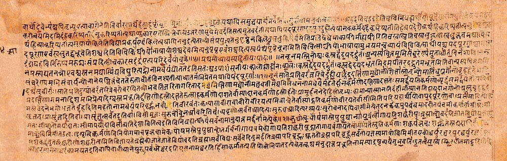
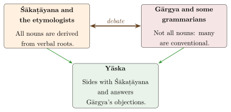

Chapter 4: Nirukta: Yāska and the Explanation of Words¶
niruktaṃ śrotram ucyate
Nirukta is called the ear [of the Veda].
— Pāṇinīya Śikṣā
4.1 Introduction¶
Nirukta (“explanation”, literally “spoken out”) is the Vedāṅga concerned with explaining the meaning of words, especially the difficult words of the Vedic hymns. By the time the Vedic corpus was complete, many words of the oldest hymns had become obscure; their meaning had to be recovered if the hymns were to be understood. The Nirukta tradition did this chiefly by connecting each word with a verbal root that seemed to explain it, a procedure called nirvacana. Only one work of the tradition survives: the Nirukta of Yāska (Sarup 1967).
4.2 Yāska and the Nighaṇṭu¶
Yāska is generally placed before Pāṇini, perhaps in the 5th century BCE or somewhat earlier; his date, like Pāṇini’s, can be fixed only relatively. His Nirukta is a commentary on the Nighaṇṭu, an older list of Vedic words whose author is unknown (later tradition names Kaśyapa, without evidence). The Nighaṇṭu has five chapters in three sections:
-
Naighaṇṭuka (chapters 1–3): groups of synonyms. The first group lists twenty-one words for “earth”, beginning gauḥ, gmā, jmā, kṣmā and including urvī, pṛthvī and mahī; another lists over a hundred words for “water”; another fifty-seven words for “speech”.
-
Naigama (chapter 4): individual difficult words, many with several meanings.
-
Daivata (chapter 5): the names of deities, arranged according to the three regions of earth, atmosphere and sky.
The Nirukta follows the same plan. Its first chapter is a general introduction to the theory of language; chapters 2–3 discuss the synonym lists, chapters 4–6 the difficult words, and chapters 7–12 the deities. Two further chapters (13–14) are later additions (pariśiṣṭa). See Table 4.1. Works such as the Nirukta were transmitted in manuscripts like the one in Figure 4.1.
| Section | Chapters | Content |
|---|---|---|
| Introduction | 1 | Theory of word classes, the origin of nouns, the purpose of the science |
| Naighaṇṭuka | 2–3 | Explanation of the synonym lists (Nighaṇṭu 1–3) |
| Naigama | 4–6 | Explanation of difficult words (Nighaṇṭu 4) |
| Daivata | 7–12 | The deities of earth, atmosphere and sky (Nighaṇṭu 5) |
| Pariśiṣṭa | 13–14 | Later supplement |


4.3 Yāska’s Theory of Language¶
The first chapter of the Nirukta is the earliest surviving general discussion of language in India.
4.3.1 The four word classes¶
Yāska begins: “There are four classes of words: nouns and verbs, preverbs and particles” (catvāri padajātāni nāmākhyāte copasarganipātāś ca). He distinguishes nouns and verbs by what they mainly express: “the verb has becoming as its chief element; nouns have being as their chief element” (bhāvapradhānam ākhyātaṃ sattvapradhānāni nāmāni). A verb presents a process unfolding in time; a noun presents something as an entity, even when it names an action (as in English “a walk”). See Table 4.2.
| Class | Term | Description |
|---|---|---|
| Noun | nāman | Expresses an entity (sattva) |
| Verb | ākhyāta | Expresses a process (bhāva) |
| Preverb | upasarga | Words such as pra, parā, sam that modify verbs |
| Particle | nipāta | Indeclinables used in comparison, conjunction, emphasis and as fillers |
This classification is among the earliest known analyses of the parts of speech. In Greece, Plato distinguished onoma and rhēma (roughly noun and verb) at about the same period, and a fuller system appears in the grammar attributed to Dionysius Thrax (2nd century BCE). Pāṇini did not adopt it (Section 5.5).
Yāska also reports the view of Vārṣyāyaṇi that there are six modifications of being: it comes into existence, exists, changes, grows, declines and perishes (jāyate, asti, vipariṇamate, vardhate, apakṣīyate, vinaśyati). The list was later taken up in Vedānta.
4.3.2 Preverbs¶
Yāska lists twenty preverbs (ā, pra, parā, abhi, prati, ati, su, nis, dus, ni, ava, ud, sam, vi, apa, anu, api, upa, pari, adhi) with their characteristic senses. He reports a disagreement: according to Śākaṭāyana, preverbs have no meaning of their own when detached from nouns and verbs, but only make manifest a meaning of the word they accompany; according to Gārgya, they have various meanings of their own. The question — whether preverbs and particles “express” (vācaka) or merely “reveal” (dyotaka) meaning — was debated by grammarians for many centuries. A verse often quoted by later grammarians illustrates the power of preverbs:
Verse quoted in the later grammatical tradition, e.g. in Kauṇḍabhaṭṭa’s Vaiyākaraṇabhūṣaṇasāra
upasargeṇa dhātvartho balād anyaḥ pratīyate
prahārāhārasaṃhāravihāraparihāravat
“Through a preverb a different meaning of the root is forcibly conveyed, as in prahāra (striking), āhāra (food, taking), saṃhāra (destruction), vihāra (recreation) and parihāra (avoidance).”
All five words derive from the root hṛ “to carry”.
4.3.3 Are all nouns derived from verbs?¶
The most famous passage of the first chapter reports a debate about the origin of nouns:
tatra nāmāny ākhyātajānīti śākaṭāyano nairuktasamayaś ca. na sarvāṇīti gārgyo vaiyākaraṇānāṃ caike.
“Nouns are derived from verbs: so says Śākaṭāyana, and this is the doctrine of the etymologists. Not all of them: so says Gārgya, and so do some of the grammarians.” (Nirukta 1.12)
Gārgya’s objections, as Yāska reports them, are acute. If every noun came from a verb, then anything that performs an action should be called by the noun derived from it: everyone who travels on a road (aśnute) should be called aśva “horse”. A thing would bear as many names as it performs actions. Some words have no recognisable root, and etymologists, to derive them, invent forms that do not exist. Yāska answers each objection and sides with Śākaṭāyana: nouns are derived from verbs, even if not every derivation can be shown, and it is a failing of the analyst, not of the method, when a derivation is missed (Figure 4.2).

4.3.4 Why the science is needed¶
Yāska also answers Kautsa, who held that the Vedic mantras are meaningless: they are fixed in form, their meaning is self-contradictory or obscure, and they address inanimate things. Yāska replies that the mantras are meaningful because their words are the same as those of ordinary speech, and that obscurity in a text is the reader’s problem: in a memorable phrase, it is not the fault of the post if the blind man does not see it. Without the Nirukta, he says, the meaning of the mantras cannot be understood, and without their meaning the ritual cannot be properly performed.
4.4 The Method of Explanation (nirvacana)¶
Yāska’s general rule is that a word should be explained by connecting it with a verb that expresses an activity relevant to its meaning, if possible one with the same sounds, and otherwise one sharing at least a sound or two. He often offers several explanations for one word, introduced by “or” (vā), and cites earlier authorities. For agni “fire”, for example, he suggests that Agni is so called because he is “the leader” (agraṇī), or because he is led forward first in sacrifices, and reports Śākapūṇi’s view that the word combines elements of three verbs, “to go”, “to burn” or “to anoint”, and “to lead”. See Table 4.3.
| Word | Explained from | Comment |
|---|---|---|
| agni (fire) | agraṇī “leader”; i “go”, añj/dah, nī “lead” | Several explanations; the historical source is an Indo-European word (Latin ignis) |
| aśva (horse) | aś “reach, pervade” | Historically related to Latin equus; the derivation from aś is not accepted by modern linguists |
| pṛthivī (earth) | prath “spread” | Historically correct: “the broad one” |
| vṛtra | vṛ “cover” | Historically plausible |
4.5 Earlier Authorities and Schools of Interpretation¶
Yāska names more than a dozen earlier scholars, among them Śākaṭāyana, Gārgya, Aupamanyava, Audumbarāyaṇa, Vārṣyāyaṇi, Śākapūṇi, Sthaulāṣṭhīvi, Kautsa and Śākalya. He also reports the views of whole schools of interpretation. A famous example concerns Vṛtra, the opponent of Indra:
“Who, then, is Vṛtra? ‘A cloud’, say the etymologists (nairuktāḥ); ‘an Asura, the son of Tvaṣṭṛ’, say the legend-tellers (aitihāsikāḥ).” (Nirukta 2.16)
The etymologists, in other words, read the myth of Indra slaying Vṛtra as a description of the storm releasing the rain, while the legend-tellers took it as a story about real beings. Yāska also refers to the ritualists (yājñikāḥ), who interpreted the mantras through their use in the sacrifice, and he sometimes gives interpretations at several levels: with reference to the gods (adhidaivata), to the self (adhyātma) and to the sacrifice (adhiyajña).
4.5.1 The deities of the three regions¶
The last part of the Nirukta treats the gods named in the Daivata section of the Nighaṇṭu, arranged by the three regions of the world. Yāska reports the view of the etymologists that there are really only three deities: Agni, whose place is the earth; Vāyu or Indra, whose place is the atmosphere; and Sūrya, whose place is the sky. The many other gods are their manifestations, receiving different names according to their different functions. The doctrine, which recalls the Ṛgvedic statement that “the poets speak of what is one in many ways” (ekaṃ sad viprā bahudhā vadanti, Ṛgveda 1.164.46), shows how the analysis of names became a theory of the divine. Yāska also discusses the forms of the gods, asking whether they are like human beings, as their description in the hymns suggests, or not, as the etymologists’ interpretation of them as natural powers implies, and he reports both views without forcing a decision.
4.6 Etymology, Folk Etymology and Historical Linguistics¶
Many of Yāska’s explanations would now be called folk etymologies: they connect words that are not historically related. Others coincide with what comparative linguistics has established. Neither should be surprising. Yāska’s aim was not historical reconstruction, a method that did not exist anywhere until the 19th century, but the recovery of the meaning of Vedic words and of the reasons for their use. In this sense nirvacana is closer to interpretation than to etymology in the modern sense, and it remained a living interpretive practice in the epics, the Purāṇas, philosophy and medicine, where names are routinely explained by “derivations” that bring out their significance (Scharfe 1977).
Yāska was, however, aware that language varies and changes. He notes, in a remark that Patañjali later repeated, that the verb śav “to go” is used among the Kambojas, while the Āryas use only its derivative śava “corpse”; and that “people in the east” use certain verbs that “northerners” use as nouns. And his discussion of the obscure words of the Nighaṇṭu implicitly recognises semantic change. The Vedic word asura, for example, means “lord, powerful one” in the older hymns (compare Avestan ahura) but “demon” in later texts; mṛga, “wild animal” in the Veda, comes to mean “deer”. See Table 4.4.
| Vedic | Related words | Comment |
|---|---|---|
| agni (fire) | Latin ignis | Yāska’s derivations do not identify the historical root |
| uṣas (dawn) | Latin aurōra, Greek ēōs | From a root meaning “to shine”, as Yāska’s tradition also suggests |
| deva (god) | Latin deus, dīvus | From the root “to shine” (div); also correctly recognised in Indian explanations |
| pitṛ (father) | Latin pater, Greek patēr, Gothic fadar | Indian derivation from pā “protect” is a folk etymology |
| mātṛ (mother) | Latin māter, Greek mētēr | Origin debated |
4.6.1 Explanation by etymology in other texts¶
Explanations of the nirukta type are older than Yāska and spread far beyond him. The Brāhmaṇas and Upaniṣads are full of them. The Bṛhadāraṇyaka Upaniṣad (5.3.1), for example, explains hṛdaya “heart” by three verbs: hṛ “take”, dā “give” and i “go”, and the Chāndogya Upaniṣad (8.3.3) explains the same word as hṛdy ayam “this one is in the heart”. Such explanations are not meant as history; they reveal what the word, in the author’s view, signifies. The same practice runs through the epics and Purāṇas, which explain the names of gods and heroes, through philosophical commentaries, and through the medical texts, which explain technical terms and plant names by their supposed derivation.
4.7 The Commentators¶
Two commentaries on the Nirukta survive: the Niruktabhāṣya of Skandasvāmin and Maheśvara (perhaps 6th–7th century and later) and the Niruktavṛtti of Durga, whose date is uncertain. The Nirukta’s method was taken up by the Vedic commentators, above all Sāyaṇa (14th century), whose commentary on the Ṛgveda became the standard traditional interpretation and was used by the European scholars who edited and translated the hymns in the 19th century.
4.7.1 Traditional and modern interpretation of the Veda¶
The relation between the Indian interpretive tradition and modern philology was itself a subject of debate. When European scholars began to study the Ṛgveda in the 19th century, some, such as Rudolph Roth, held that the hymns should be interpreted by comparing all the passages in which a word occurs and by using comparative Indo-European evidence, rather than by following Sāyaṇa and the Indian tradition, which they thought had lost the original meaning of many words. Others, such as Richard Pischel and Karl Geldner in their Vedische Studien, argued that the Indian tradition preserved much genuine knowledge and that the hymns must be read in the light of later Indian culture. Modern Vedic scholarship uses both approaches: the comparative method has clarified many words that Yāska and Sāyaṇa misunderstood, while the Indian tradition remains indispensable for the ritual context and for the history of interpretation.
4.8 Lexicography (kośa)¶
The Nighaṇṭu stands at the head of a long tradition of Indian lexicography. The later dictionaries (kośa) were usually composed in verse, to be memorised, and they took one of two forms: synonym dictionaries, which group words by the things they denote, and homonym dictionaries (nānārtha or anekārtha), which list words that have several meanings (Vogel 1979).
4.8.1 The Amarakośa¶
The Amarakośa of Amarasiṃha (c. 5th–7th century) shows the method of the synonym dictionary at its most influential. Its author was a Buddhist, yet it was learned by heart by generations of Brahmin, Jain and Buddhist students across India and was translated into Tibetan and other languages. Its title in the manuscripts, Nāmaliṅgānuśāsana (“Instruction in Nouns and their Genders”), states its double purpose. It teaches which words may be used for a given thing, and it records the grammatical gender of each word, which in Sanskrit, unlike Tamil (Section 10.5), cannot be predicted from the meaning. A few introductory verses set out the conventions. Gender is shown by the form of the word, by its position in a list, or by explicit markers such as striyām (“in the feminine”) and klībe (“in the neuter”).
The work, some 1,500 verses in the śloka metre, is divided into three books (kāṇḍa), each made up of sections (varga), and its arrangement is a map of the world as its learned users conceived it. The first book runs from heaven and the gods through sky, directions, time, mind, speech, drama, the underworld and hell to the waters. The second covers the earth, towns, mountains, plants and animals, and then human beings, ending with sections on the four varṇas, Brahmin, Kṣatriya, Vaiśya and Śūdra. The third gathers adjectives, miscellaneous words, homonyms, indeclinables and a summary of gender rules. The social order is built into the dictionary. Occupations, mixed castes and peoples regarded as outside the varṇa order are listed in the Śūdra section, so that a student who learned the vocabulary learned the hierarchy with it.
Homonym dictionaries needed a different order, since their entries are words, not things. The usual method was formal. Words were grouped by their final consonant and by the number of their syllables, so that a reader could find, for example, all two-syllable words ending in -ka together. Hemacandra’s Anekārthasaṃgraha groups first by the number of syllables, the Medinīkośa of Medinīkara (c. 14th century) first by the final consonant. Like the synonym dictionaries, they were designed to be memorised and recalled, not consulted page by page.
4.8.2 Commentators and later lexicographers¶
The Amarakośa attracted dozens of commentaries, which are themselves important works of lexicography. They identify plants, animals and objects, cite usage from literature, discuss grammar, and often give the equivalent word in a regional language. Kṣīrasvāmin wrote in 11th-century Kashmir. Sarvānanda’s Ṭīkāsarvasva (1159), from Bengal, glosses several hundred words in early Bengali and is an important source for the history of that language. Rāyamukuṭa’s Padacandrikā dates from 1431, and Bhānuji Dīkṣita, a son of Bhaṭṭoji Dīkṣita, wrote the Vyākhyāsudhā in the 17th century. Versions of the Amarakośa with glosses in Kannada, Telugu, Sinhala and other languages served as bilingual dictionaries before the colonial period. New synonym dictionaries continued to be written beside it, among them Halāyudha’s Abhidhānaratnamālā (10th century) and Yādavaprakāśa’s large Vaijayantī (11th century), which combines synonyms and homonyms.
The Jains made a large contribution. Dhanapāla, a poet at the court of Dhārā, composed the Pāiyalacchīnāmamālā in 972–73, a short synonym dictionary of Prakrit in verse and the earliest Prakrit lexicon to survive; he says he wrote it for his younger sister Sundarī. Hemacandra, in the 12th century, compiled a complete set of lexicons to accompany his grammar (Section 5.16). His Abhidhānacintāmaṇi, a synonym dictionary with his own commentary, devotes its first book to the Jinas, where the Amarakośa begins with the gods of heaven, so that the order of the dictionary reflects the religion of its author. Beside it stand the Anekārthasaṃgraha of homonyms, a supplement on the names of plants, and the Deśīnāmamālā, an unusual work that collects the words of the Prakrits that cannot be traced to Sanskrit (deśī) and so remains a chief source for the non-Sanskritic vocabulary of Middle Indo-Aryan. Specialised lexicons (nighaṇṭu) of plants and drugs formed a separate branch tied to medicine; they are discussed in Volume 13, Āyurveda, and Volume 15, Kṛṣi and Jīva Vijñāna.
In the 19th century these traditions met European lexicography. Two Calcutta scholars compiled encyclopaedic Sanskrit dictionaries in Sanskrit, Rādhākānta Deb’s Śabdakalpadruma (1822–1858) and Tārānātha Tarkavācaspati’s Vācaspatyam (1873–1884), while the great Petersburg Dictionary of Böhtlingk and Roth (1855–1875) and Monier-Williams’s Sanskrit–English Dictionary (1872; revised 1899) drew on the Indian kośas as well as on the texts.
4.8.3 Lexicography beyond Sanskrit¶
Other Indian languages developed their own lexicographical traditions. In Tamil, verse thesauri called nikaṇṭu (from Sanskrit nighaṇṭu) were composed from the late 1st millennium onwards: the Cēntaṉ Tivākaram, the Piṅkalam and, in the 16th century, the Cūṭāmaṇi Nikaṇṭu, which was memorised by Tamil students into the 20th century. Kannada and Telugu scholars compiled dictionaries of their languages, often explaining words in Sanskrit. Persian lexicographers in India produced the great Persian dictionaries and also recorded Indian words (Chapter 13). In the colonial period, bilingual dictionaries by missionaries, officials and Indian scholars laid the foundations of modern lexicography in every major Indian language; the Tamil Lexicon published by the University of Madras (1924–1936) is a notable example of a dictionary made on historical principles.
Further Reading¶
-
Sarup, Lakshman. 1967. The Nighaṇṭu and the Nirukta: The Oldest Indian Treatise on Etymology, Philology and Semantics. Motilal Banarsidass.. — Text and translation of the Nighaṇṭu and Nirukta.
-
Scharfe, Hartmut. 1977. Grammatical Literature. A History of Indian Literature, 5.2. Otto Harrassowitz.. — On the place of the Nirukta in Indian linguistics.
-
Vogel, Claus. 1979. Indian Lexicography. A History of Indian Literature, 5.4. Otto Harrassowitz.. — The standard survey of Sanskrit and Prakrit lexicography.